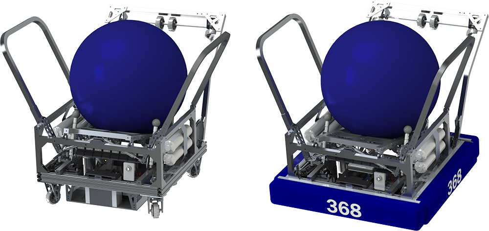
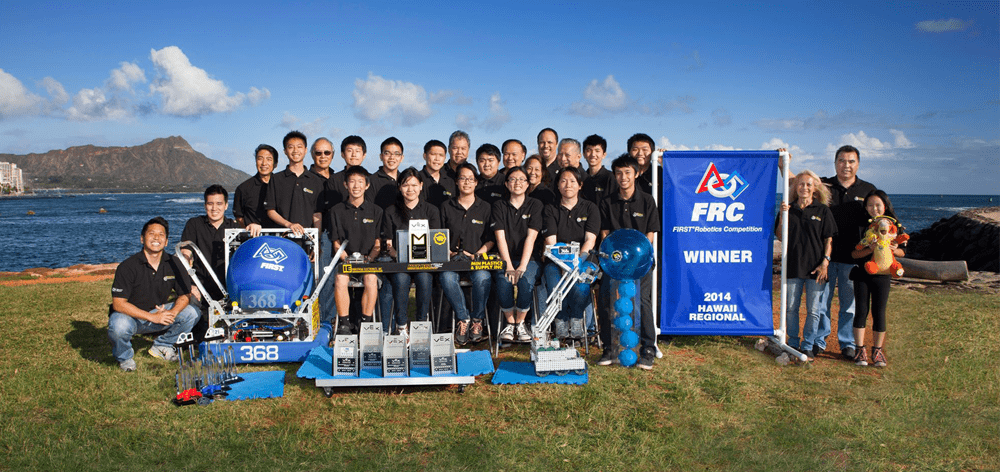

FIRST Aerial Assist (2014)
Team Kika Mana #368's Robot
Objective: Scoring 2'-diameter exercise balls into scoring areas located at far ends of the field. Additional points can be scored by passing the ball amongst the alliance robots in-between zones and by throwing the ball over the truss (midpoint overhang)
Robot: This robot has a swerve drive to allow easy maneuvering across the field and to easily avoid opponent robots. The robot also has wings that can open and close to allow us to easily catch the ball (open) and to make sure the ball does not fall out (closed). The intake of the robot is designed to propel downward (to pickup the ball) and to propel upward (to keep within the size requirements of the robot). The intake is also designed to allow the ball to be picked up easily from multi-directions (left, right, straight-front)

